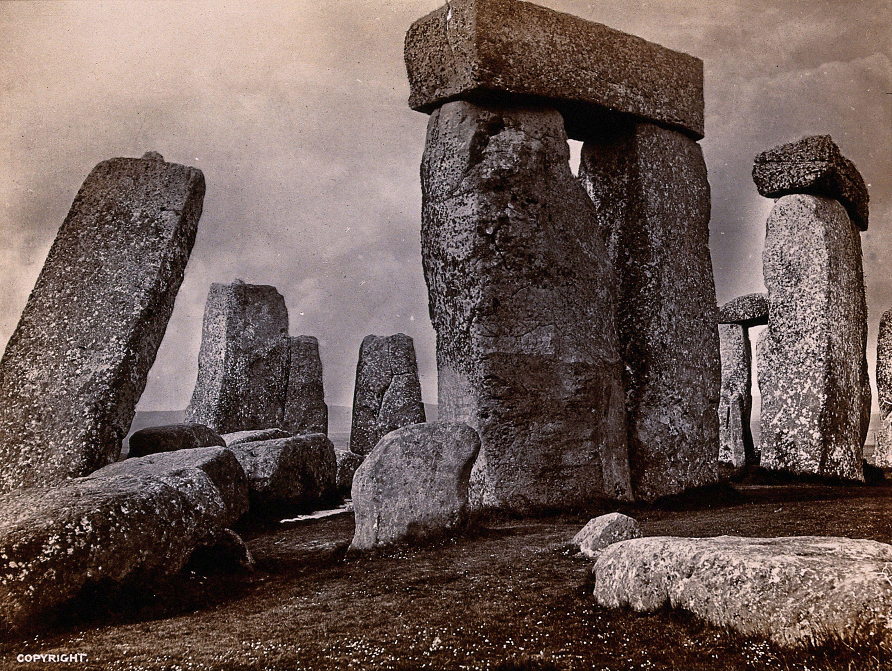

What would make a community spend generations dragging giant stones across the land to build something with no roof and no walls?
In Lesson 2.01 prehistoric people painted on a cave wall. Here they do something even more ambitious: they shape the landscape itself into a monument that still stands after 4,500 years.
🎯 BY THE END OF THIS LESSON YOU WILL BE ABLE TO…
1
I will be able to describe Stonehenge and explain what makes it a work of monumental architecture.
2
I will be able to explain post-and-lintel construction and the terms megalith and trilithon.
3
I will be able to compare a painted work and a built work as evidence of one culture’s priorities.
📋 WHAT YOU NEED FOR THIS LESSON
▶
A notebook or an open Word document for the “Now You Try” near the end of this lesson
▶
Your notes on the Lascaux paintings from Lesson 2.01, for the comparison
📚 PART 1 · LOOK FIRST~10 MIN
👀 LOOK CLOSELY · THINK ABOUT SCALE
The largest of these standing stones weigh around 25 tons, taller than two people and heavier than three cars. They were shaped and raised without metal tools, wheels, or machines. As you look, ask: what does it take, in people and in years, to make this happen?

Stonehenge, Salisbury Plain, England; built in stages c. 3000–1500 BC. Photographed 1901. Public domain.
Stonehenge stands on Salisbury Plain in southern England. It was not built all at once; it grew over roughly 1,500 years, beginning around 3000 BC, with the great circle of shaped sarsen stones raised about 2500 BC. The builders were Neolithic (“New Stone Age”) people, farmers rather than the roaming hunters of Lascaux. That shift matters: settled farming communities had the organization, the shared purpose, and the staying-in-one-place to undertake a project measured in generations.
📚 PART 2 · HOW IT STANDS UP~18 MIN
The huge stones are called megaliths (from Greek mega, “great,” and lithos, “stone”). They are assembled using the oldest building method in the world: post-and-lintel, in which two upright posts support a horizontal beam, the lintel, laid across the top. At Stonehenge, a pair of posts capped by one lintel forms a trilithon (“three stones”). Look back at the photo and you can pick the trilithons out.
Post-and-lintel: two posts plus one lintel make a trilithon. The same idea later holds up Greek temples and cathedral doorways.
💡 CONNECTION
Post-and-lintel is not a prehistoric curiosity. You will see the exact same structure holding up the Parthenon in Unit 4 and framing cathedral portals in Unit 6. Stonehenge is the first chapter of a building story that runs through the whole course.
Why build it? Here the evidence is real but partial. The monument is carefully aligned with the sun: at the summer solstice the sun rises in line with its main axis, and at the winter solstice it sets along it. That alignment points strongly to a ritual and astronomical purpose, perhaps marking the turning of the year, perhaps tied to the dead (many burials have been found nearby). As with the caves, we can describe and analyze with confidence and interpret with care.
📚 PART 3 · TWO WORKS, ONE QUESTION~22 MIN
Lascaux and Stonehenge are wildly different objects, a painting in the dark and a ring of stone under the open sky. But an art historian can hold them side by side and ask the same question of both: what does this work tell us about what its makers valued? One culture invested its skill in capturing the animals it hunted; another organized hundreds of people for generations to align stone with the sky. Comparing them is your graded task this unit, so practice the move now.
🔍 ARTWORK SPOTLIGHT
Stonehenge, Salisbury Plain (begun c. 3000 BC)
Wiltshire, England
Describe: A ring of enormous upright stones stands on open grassland, some still capped by horizontal stones, others fallen.
Analyze: The stones are arranged in a circle of post-and-lintel trilithons, their great scale and the open space at the center giving the ring a sense of deliberate order and weight.
Interpret: One possible reading is that the precise solstice alignment made the circle a kind of calendar or temple marking the turning of the year. The evidence is strong but not complete.
Judge: As architecture it succeeds powerfully: with only stone tools, the builders made a structure that still commands the landscape and tracks the sun 4,500 years later.
📏 PLACE IT ON THE SCALE
How certain can an art historian honestly be that Stonehenge was used to track the sun? Choose the most defensible position.
Pick the answer that best fits the evidence.
⚠️ WORTH KNOWING · AI & CONFIDENT FICTION
Stonehenge attracts a lot of myths (that it was built by a lost super-civilization, or aliens, or in a single year). An AI tool trained on the open internet has absorbed those myths alongside the real archaeology and can repeat them in a confident voice. It cannot reliably tell solid evidence from popular fiction. When a claim sounds dramatic, that is your cue to check it against a museum or scholarly source, the habit this whole course is building.
📖 VOCABULARY FROM THIS LESSON
Neolithic
The “New Stone Age” of settled farming communities, the people who built Stonehenge.
Monumental
Built at great scale to last and to impress, as architecture meant to outlast its makers.
Megalith
A very large stone used in building (Greek: “great stone”).
Post-and-lintel
The oldest construction method: two upright posts supporting a horizontal beam (the lintel).
Trilithon
Two upright stones capped by a single lintel: “three stones.”
✏️ NOW YOU TRY · IN YOUR NOTEBOOK
In two sentences, answer this for both works: what did its makers have to value to make it possible? One sentence for the Lascaux paintings, one for Stonehenge. Keep each answer tied to something you can actually see or know about the work. You will expand exactly this thinking into your Unit 2 comparison.
➡️ WHAT YOU’LL DO NEXT
1
Lascaux & Stonehenge (discussion)
Post a short claim about the two works as cultural artifacts, then respond to a classmate.
2
Prehistoric Symbol Painting (creation activity)
Make a small image using only earth-tone marks and symbols, the way the first artists did.
3
Unit 2 Quiz and VR Museum Journal
A short auto-graded quiz, plus a guided visit to a prehistoric space in the VR environment.
💪 WHY THIS MATTERS
Architecture is art you can walk into, and it begins here, with people deciding that some purpose was worth moving mountains of stone for. Every temple, cathedral, and dome ahead in this course is a more elaborate answer to the same impulse that raised Stonehenge: the human drive to build something larger than ourselves and make it mean something.
Optima Academy Online · ART HISTORY & CRITICISM · Semester 1 · Student Lesson Page
Lesson 2.02 · Raising Stones: Stonehenge & the Neolithic